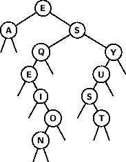
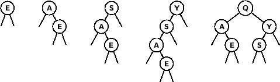
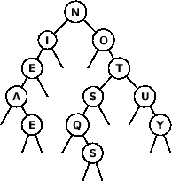
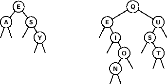
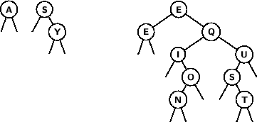
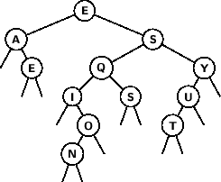
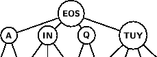
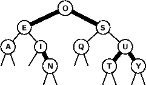

- Exercise 12.26. Which symbol-table implementation would you use for an application that does 102 insert operations, 103 search operations, and 104 select operations, randomly intermixed? Justify your answer.
- Exercise 12.27. (This exercise is five exercises in disguise.) Answer Exercise 12.26 for the other five possibilities of matching up operations and frequency of use.
First, here are the candidate implementations that we have talked about (see Table 12.1 on page 509 in the text):
- Key-indexed array
- This only works if we have a limited range of values for the keys. The problem does not mention any such assumption, so we have to skip this one.
- Ordered array
- Each insertion will take about N/2 operations on average, but selection
takes a single step (just an array lookup). A linear search will take about N/2 operations,
but ordered data in an array is exactly the setup we need for binary search, so we can perform
searches much better in about lg N steps.
- Ordered linked list
- Each of the operations takes about N/2 steps on average, since they
each need to traverse the linked list starting from the head and stopping on a node that could be
anywhere in the list (so on average it will be about halfway through). This means that it will
never perform better than an ordered array.
- Unordered array
- Insertion takes only one step, while search takes on average N/2 steps.
The worst case for selection will be N lg N, if all the data needs to be sorted first. The
average case behavior for selection is harder to determine, since it depends on the relative
frequency of selection versus insertion.
If there are as many (or more) selections as insertions, then sorting in the one or two new elements that have arrived since the previous selection will be very quick (proportional to N, using Insertion Sort). In this case, it would be better to switch to an ordered array, because
there would be no loss in shifting the linear time responsibility onto the insertions in exchange for a constant time selection, and the search would be improved to lg N by enabling a binary search.
If there are M times as many insertions as selections, then on average we will need to sort M newly arrived elements into the array on each select operation. This is the situation discussed in Exercises 8.1 and 8.2, where we determined that the best approach is to sort the M new elements and then merge them into the already sorted N elements, for a total time proportional to M lg M + N.
- Unordered linked list
- The results here are just the same as for an unordered array, except we don't have the option of switching over to binary search if there are as many selections as insertions.
- Binary search tree
- We will group all of the variations of trees that we have seen under this item, because
we are mostly interested in average behavior, and we have seen that it does not take much work to
avoid the worst case by ensuring that the trees remain relatively balanced. Therefore, we may
conclude that each of the operations will take about lg N steps.
- Hashing
- We haven't talked about this yet, but although it can achieve constant time insert and search on average, with just a few assumptions about the keys, it is not at all compatible with the select operation: every selection will take N lg N steps and require an extra array of size N, because we have to copy all of the data out of the hash table and sort it (it will not work to sort the data in place, because the ordering of the items in a hash table is not the same as the ordering on the keys).
Therefore, we have only three implementations that we need to consider: ordered array with binary search, unordered array (or linked list), and binary search tree. Here are the six cases we need to consider:
- 102 insert, 103 search, 104 select operations:
N will be about 100, which gives the following table of steps per operation:
| |
insert |
search |
select |
weighted total |
| ordered array |
50 |
7 |
1 |
22,000 |
| unordered array |
1 |
50 |
100 |
1,050,100 |
| binary search tree |
7 |
7 |
7 |
77,700 |
The ordered array is the winner.
- 102 insert, 104 search, 103 select operations:
N will be about 100, which gives the following table of steps per operation:
| |
insert |
search |
select |
weighted total |
| ordered array |
50 |
7 |
1 |
76,000 |
| unordered array |
1 |
50 |
100 |
600,100 |
| binary search tree |
7 |
7 |
7 |
77,700 |
This is essentially a tie between the ordered array and the BST, which makes sense because both of them are spending most of the time doing binary searches.
- 103 insert, 102 search, 104 select operations:
N will be about 1000, which gives the following table of steps per operation:
| |
insert |
search |
select |
weighted total |
| ordered array |
500 |
10 |
1 |
511,000 |
| unordered array |
1 |
500 |
1000 |
10,051,000 |
| binary search tree |
10 |
10 |
10 |
111,000 |
The binary search tree is the winner.
- 103 insert, 104 search, 102 select operations:
N will be about 1000, which gives the following table of steps per operation:
| |
insert |
search |
select |
weighted total |
| ordered array |
500 |
10 |
1 |
600,100 |
| unordered array |
1 |
500 |
1030 |
5,104,000 |
| binary search tree |
10 |
10 |
10 |
111,000 |
The binary search tree is the winner.
- 104 insert, 102 search, 103 select operations:
N will be about 10,000, which gives the following table of steps per operation:
| |
insert |
search |
select |
weighted total |
| ordered array |
5000 |
13 |
1 |
50,002,300 |
| unordered array |
1 |
5000 |
10,030 |
10,540,000 |
| binary search tree |
13 |
13 |
13 |
144,300 |
The binary search tree is the clear winner.
- 104 insert, 103 search, 102 select operations:
N will be about 10,000, which gives the following table of steps per operation:
| |
insert |
search |
select |
weighted total |
| ordered array |
5000 |
13 |
1 |
50,013,100 |
| unordered array |
1 |
5000 |
10,700 |
6,080,000 |
| binary search tree |
13 |
13 |
13 |
144,300 |
The binary search tree is the clear winner.
To summarize, the binary search tree is the best choice unless we have relatively few insertions (and a correspondingly small amount of data), in which case we might do a little better with an ordered array.
- Exercise 12.47. Draw the BST that results when you insert items with the keys
E A S Y Q U E S T I O N, in that order, into an initially empty tree.
Here is the result:

- Exercise 12.51. Write a function that returns the number of items in a BST with keys equal to a given key.
If we know that all of the items in a node's left child have keys that are strictly less than the node's key, so that any duplicates would have to be in the right child (this situation is ensured by the version of insert given in Section 12.5), then we can use an iterative solution:
int countEqual(link h, Item x) {
int count = 0;
link p = h;
while (p != 0) {
if (x.key() < p->item.key()) {
p = p->left;
} else {
if (x.key() == p->item.key()) count++;
p = p->right;
}
}
return count;
}
However, if there is any chance that the structure of the tree will be changed in a way that could invalidate this assumption, for example by rotations to maintain a balance condition, then we need to search both children of a matching node for duplicates. The easiest way to do this is recursively:
int countEqual(link h, Item x) {
if (h == 0) return 0;
if (x.key() < h->item.key()) return countEqual(h->left, x);
if (x.key() > h->item.key()) return countEqual(h->right, x);
return 1 + countEqual(h->left, x) + countEqual(h->right, x);
}
- Exercise 12.73. Draw the BST that results when you insert items with the keys
E A S Y Q U E S T I O N into an initially empty tree, using the root insertion method.
Here are the first few steps, where after each insertion we rotate the new node up to the root of the tree:

Here is the final result:

- Exercise 12.79. Draw the BST that results when you insert items with the keys
E A S Y Q U E S T I O N into an initially empty tree, then remove the Q.
Exercise 12.47, above, produced the binary search tree that results from
inserting the keys E A S Y Q U E S T I O N, so we just have to
delete the Q from that tree. The node containing Q
has only one child, so the deletion is easy: we just move that child up
into Q's position:
- Exercise 12.80. Draw the binary search tree that results when you insert items with the keys E A S Y into one initially empty tree, and insert items with the keys Q U E S T I O N into another initially empty tree, then combine the result.
Here are the two trees to be joined, constructed with ordinary insertion (i.e., not root insertion):

Recall that the algorithm for joining the trees takes the root of one tree and inserts it at the root of the other, then recursively joins the left children together and also the right children. We will split up the smaller of the two trees, to make the process easier, so the first step is to root insert the E into the right tree:

Now we join the tree containing A with the left child of the result (the subtree containing just the E), and then we join the tree with S at the root with the right child (the subtree headed by Q). The final result is

- Exercise 13.39. Draw the balanced 2-3-4 search tree that results when you insert items with
the keys E A S Y Q U T I O N in that order into an
initially empty tree, using the top-down insertion method.
This is what I get:

- Exercise 13.48. Draw the red-black BST that results when you insert items with the keys
E A S Y Q U T I O N in that order into an initially empty tree, using the top-down insertion method.
Following the code in Program 13.6 (page 568 of the text), here is the result:

Observe that if the red nodes are joined into their parents, the result is exactly the same as the 2-3-4 tree in Exercise 13.39. Of course, this is no accident.